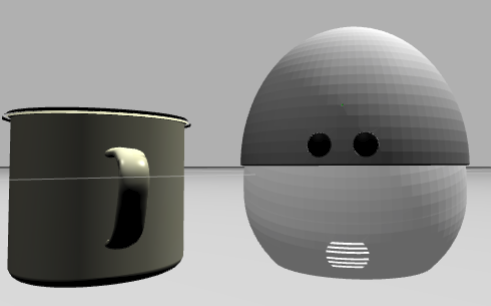
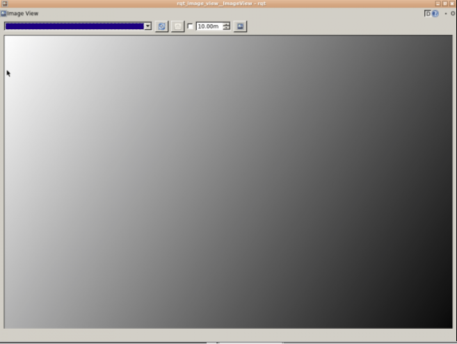
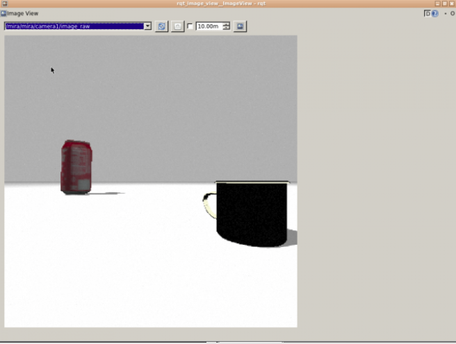

# Unit 1: Create your own ROS Package that Recognises Images with TensorFlow<img src="img/robotignite_logo_text.png" width="700" />
<img src="img/tensorflow_image_unit1_intro.png" width="400" />
<b>Estimated time to completion:</b> 1.5 hoursEstimated time to completion: 1.5 hours
<b>Simulated robot:</b> Mira Robot<br><br><b>What will you learn in this unit?</b>* Use a TensorFlow Model that has learned hundreds of images from the ImageNet Database.Simulated robot: Mira Robot
What will you learn in this unit?
<p style="background:#407EAF;color:white;">**Example 1.1**</p>Example 1.1
So, let's get straight to the point. The first thing you will have to do is create a package that will contain all the scripts related to this unit in your workspace.So, let's get straight to the point. The first thing you will have to do is create a package that will contain all the scripts related to this unit in your workspace.
<table style="float:left;background: #407EAF"><tr><th><p class="transparent">Execute in WebShell #1</p></th></tr></table>|
Execute in WebShell #1 |
|---|
roscd;cd ../src;catkin_create_pkg tf_unit1_pkg rospy std_msgs sensor_msgscd ..;source devel/setup.bash;rospack profileroscd tf_unit1_pkg;mkdir launch;mkdir scriptsYou now have your package. Next, place all of your **Python Scripts** into **scripts** and your **ROS launch files** into **launch**.You now have your package. Next, place all of your Python Scripts into scripts and your ROS launch files into launch.
You are now going to create two python scripts that will retrieve the image data, classify it based on a downloaded TensorFlow model, and publish the results into a ROS topic.You are now going to create two python scripts that will retrieve the image data, classify it based on a downloaded TensorFlow model, and publish the results into a ROS topic.
<p style="background:#3B8F10;color:white;" id="image_recognition">**Python Program {1.1A-py}: image_recognition.py** </p>Python Program {1.1A-py}: image_recognition.py
So, this first python script is the one responsible for retrieving ROS images from a topic and sending them to a classification class that will decide which objects are present on the scene.<br>So, this first python script is the one responsible for retrieving ROS images from a topic and sending them to a classification class that will decide which objects are present on the scene.
#!/usr/bin/env pythonimport rospyfrom sensor_msgs.msg import Imagefrom std_msgs.msg import Stringfrom cv_bridge import CvBridgeimport cv2import numpy as npimport tensorflow as tfimport classify_imageclass RosTensorFlow(): def __init__(self): classify_image.maybe_download_and_extract() self._session = tf.Session() classify_image.create_graph() self._cv_bridge = CvBridge() self._sub = rospy.Subscriber('image', Image, self.callback, queue_size=1) self._pub = rospy.Publisher('result', String, queue_size=1) self.score_threshold = rospy.get_param('~score_threshold', 0.1) self.use_top_k = rospy.get_param('~use_top_k', 5) def callback(self, image_msg): cv_image = self._cv_bridge.imgmsg_to_cv2(image_msg, "bgr8") # copy from # classify_image.py image_data = cv2.imencode('.jpg', cv_image)[1].tostring() # Creates graph from saved GraphDef. softmax_tensor = self._session.graph.get_tensor_by_name('softmax:0') predictions = self._session.run( softmax_tensor, {'DecodeJpeg/contents:0': image_data}) predictions = np.squeeze(predictions) # Creates node ID --> English string lookup. node_lookup = classify_image.NodeLookup() top_k = predictions.argsort()[-self.use_top_k:][::-1] for node_id in top_k: human_string = node_lookup.id_to_string(node_id) score = predictions[node_id] if score > self.score_threshold: rospy.loginfo('%s (score = %.5f)' % (human_string, score)) self._pub.publish(human_string) def main(self): rospy.spin()if __name__ == '__main__': classify_image.setup_args() rospy.init_node('rostensorflow') tensor = RosTensorFlow() tensor.main()So, let's comment on the most relevant pieces of code:So, let's comment on the most relevant pieces of code:
classify_image.maybe_download_and_extract()self._session = tf.Session()classify_image.create_graph()self._cv_bridge = CvBridge()These four lines are what make most of the magic happen:These four lines are what make most of the magic happen:
classify_image.maybe_download_and_extract()This first line will download the **freezed-tensorflow-model**. A more exact model that was downloaded is **classify_image_graph_def.pb**, from the **imagenet_2012_challenge**. It's a model prepared for image recognition of hundreds of objects, trained with thousands of pre-labeled images.This first line will download the freezed-tensorflow-model. A more exact model that was downloaded is classify_image_graph_def.pb, from the imagenet_2012_challenge. It's a model prepared for image recognition of hundreds of objects, trained with thousands of pre-labeled images.
Here, you have a list of the objects that this model should be able to detect. On this list, you have the **encoding used by TensorFlow** and the **human-readable labels**:Here, you have a list of the objects that this model should be able to detect. On this list, you have the encoding used by TensorFlow and the human-readable labels:
[imagenet_synset_to_human_label_map](extra_files/imagenet_synset_to_human_label_map.txt)As you can see, there are quite a few! This means that you could probably be able to use this for basic object recognition programs.As you can see, there are quite a few! This means that you could probably be able to use this for basic object recognition programs.
self._session = tf.Session()Here, you are starting a TensorFlow session. This will give you access to all of the TensorFlow functionality and you will be able to use the **tensor soft-max** from the downloaded model.Here, you are starting a TensorFlow session. This will give you access to all of the TensorFlow functionality and you will be able to use the tensor soft-max from the downloaded model.
classify_image.create_graph()We may talk about this line later, in the second script. Just know that you are initialising all of the necessary elements for recognition using the model. You will be able to see this *graph** through the *TensorBoard** tools at the end of this unit.We may talk about this line later, in the second script. Just know that you are initialising all of the necessary elements for recognition using the model. You will be able to see this graph** through the TensorBoard** tools at the end of this unit.
self._cv_bridge = CvBridge()And here is our beloved CV_Bridge, which will allow us to use all of the power of **OpenCV** with ROS type images.And here is our beloved CV_Bridge, which will allow us to use all of the power of OpenCV with ROS type images.
Let's also comment on the three lines that are important from a ROS point of view:Let's also comment on the three lines that are important from a ROS point of view:
self._sub = rospy.Subscriber('image', Image, self.callback, queue_size=1)self._pub = rospy.Publisher('result', String, queue_size=1)self.score_threshold = rospy.get_param('~score_threshold', 0.1)Here, you declare a subscriber to an image topic, which we will remap to our particular robot camera's RGB topic.<br>You also declare a publisher, where you will write the highest-score object that was recognised.<br>And finally, you set the **score_threshold**. This you can increase up to 1.0. The higher the value, the most sure the detection has to be to consider it a correct and valid one. In this case, it's rather low to have loads of detections.Here, you declare a subscriber to an image topic, which we will remap to our particular robot camera's RGB topic.
You also declare a publisher, where you will write the highest-score object that was recognised.
And finally, you set the score_threshold. This you can increase up to 1.0. The higher the value, the most sure the detection has to be to consider it a correct and valid one. In this case, it's rather low to have loads of detections.
<p style="background:#3B8F10;color:white;" id="image_recognition">**END Python Program {1.1A-py}: image_recognition.py** </p>END Python Program {1.1A-py}: image_recognition.py
We now move on to the second python script. This one does all the heavy lifting of preparing the downloaded model to have human readable tags.We now move on to the second python script. This one does all the heavy lifting of preparing the downloaded model to have human readable tags.
<p style="background:#3B8F10;color:white;" id="classify_image">**Python Program {1.1B-py}: classify_image.py** </p>Python Program {1.1B-py}: classify_image.py
# Copyright 2015 The TensorFlow Authors. All Rights Reserved.## Licensed under the Apache License, Version 2.0 (the "License");# you may not use this file except in compliance with the License.# You may obtain a copy of the License at## http://www.apache.org/licenses/LICENSE-2.0## Unless required by applicable law or agreed to in writing, software# distributed under the License is distributed on an "AS IS" BASIS,# WITHOUT WARRANTIES OR CONDITIONS OF ANY KIND, either express or implied.# See the License for the specific language governing permissions and# limitations under the License.# ==============================================================================# this file is from https://github.com/tensorflow/models"""Simple image classification with Inception.Run image classification with Inception trained on ImageNet 2012 Challenge dataset.This program creates a graph from a saved GraphDef protocol buffer,and runs inference on an input JPEG image. It outputs human readablestrings of the top 5 predictions along with their probabilities.Change the --image_file argument to any jpg image to compute aclassification of that image.Please see the tutorial and website for a detailed description of howto use this script to perform image recognition.https://tensorflow.org/tutorials/image_recognition/"""from __future__ import absolute_importfrom __future__ import divisionfrom __future__ import print_functionimport argparseimport os.pathimport reimport sysimport tarfileimport numpy as npfrom six.moves import urllibimport tensorflow as tfFLAGS = None# pylint: disable=line-too-longDATA_URL = 'http://download.tensorflow.org/models/image/imagenet/inception-2015-12-05.tgz'# pylint: enable=line-too-longclass NodeLookup(object): """Converts integer node ID's to human readable labels.""" def __init__(self, label_lookup_path=None, uid_lookup_path=None): if not label_lookup_path: label_lookup_path = os.path.join( FLAGS.model_dir, 'imagenet_2012_challenge_label_map_proto.pbtxt') if not uid_lookup_path: uid_lookup_path = os.path.join( FLAGS.model_dir, 'imagenet_synset_to_human_label_map.txt') self.node_lookup = self.load(label_lookup_path, uid_lookup_path) def load(self, label_lookup_path, uid_lookup_path): """Loads a human readable English name for each softmax node. Args: label_lookup_path: string UID to integer node ID. uid_lookup_path: string UID to human-readable string. Returns: dict from integer node ID to human-readable string. """ if not tf.gfile.Exists(uid_lookup_path): tf.logging.fatal('File does not exist %s', uid_lookup_path) if not tf.gfile.Exists(label_lookup_path): tf.logging.fatal('File does not exist %s', label_lookup_path) # Loads mapping from string UID to human-readable string proto_as_ascii_lines = tf.gfile.GFile(uid_lookup_path).readlines() uid_to_human = {} p = re.compile(r'[n\d]*[ \S,]*') for line in proto_as_ascii_lines: parsed_items = p.findall(line) uid = parsed_items[0] human_string = parsed_items[2] uid_to_human[uid] = human_string # Loads mapping from string UID to integer node ID. node_id_to_uid = {} proto_as_ascii = tf.gfile.GFile(label_lookup_path).readlines() for line in proto_as_ascii: if line.startswith(' target_class:'): target_class = int(line.split(': ')[1]) if line.startswith(' target_class_string:'): target_class_string = line.split(': ')[1] node_id_to_uid[target_class] = target_class_string[1:-2] # Loads the final mapping of integer node ID to human-readable string node_id_to_name = {} for key, val in node_id_to_uid.items(): if val not in uid_to_human: tf.logging.fatal('Failed to locate: %s', val) name = uid_to_human[val] node_id_to_name[key] = name return node_id_to_name def id_to_string(self, node_id): if node_id not in self.node_lookup: return '' return self.node_lookup[node_id]def create_graph(): """Creates a graph from saved GraphDef file and returns a saver.""" # Creates graph from saved graph_def.pb. with tf.gfile.FastGFile(os.path.join( FLAGS.model_dir, 'classify_image_graph_def.pb'), 'rb') as f: graph_def = tf.GraphDef() graph_def.ParseFromString(f.read()) _ = tf.import_graph_def(graph_def, name='')def run_inference_on_image(image): """Runs inference on an image. Args: image: Image file name. Returns: Nothing """ if not tf.gfile.Exists(image): tf.logging.fatal('File does not exist %s', image) image_data = tf.gfile.FastGFile(image, 'rb').read() # Creates graph from saved GraphDef. create_graph() with tf.Session() as sess: # Some useful tensors: # 'softmax:0': A tensor containing the normalized prediction across # 1000 labels. # 'pool_3:0': A tensor containing the next-to-last layer containing 2048 # float description of the image. # 'DecodeJpeg/contents:0': A tensor containing a string providing JPEG # encoding of the image. # Runs the softmax tensor by feeding the image_data as input to the graph. softmax_tensor = sess.graph.get_tensor_by_name('softmax:0') predictions = sess.run(softmax_tensor, {'DecodeJpeg/contents:0': image_data}) predictions = np.squeeze(predictions) # Creates node ID --> English string lookup. node_lookup = NodeLookup() top_k = predictions.argsort()[-FLAGS.num_top_predictions:][::-1] for node_id in top_k: human_string = node_lookup.id_to_string(node_id) score = predictions[node_id] print('%s (score = %.5f)' % (human_string, score))def maybe_download_and_extract(): """Download and extract model tar file.""" dest_directory = FLAGS.model_dir if not os.path.exists(dest_directory): os.makedirs(dest_directory) filename = DATA_URL.split('/')[-1] filepath = os.path.join(dest_directory, filename) if not os.path.exists(filepath): def _progress(count, block_size, total_size): sys.stdout.write('\r>> Downloading %s %.1f%%' % ( filename, float(count * block_size) / float(total_size) * 100.0)) sys.stdout.flush() filepath, _ = urllib.request.urlretrieve(DATA_URL, filepath, _progress) print() statinfo = os.stat(filepath) print('Successfully downloaded', filename, statinfo.st_size, 'bytes.') tarfile.open(filepath, 'r:gz').extractall(dest_directory)def main(_): maybe_download_and_extract() image = (FLAGS.image_file if FLAGS.image_file else os.path.join(FLAGS.model_dir, 'cropped_panda.jpg')) run_inference_on_image(image)def setup_args(): parser = argparse.ArgumentParser() # classify_image_graph_def.pb: # Binary representation of the GraphDef protocol buffer. # imagenet_synset_to_human_label_map.txt: # Map from synset ID to a human readable string. # imagenet_2012_challenge_label_map_proto.pbtxt: # Text representation of a protocol buffer mapping a label to synset ID. parser.add_argument( '--model_dir', type=str, #default='/tmp/imagenet', default='/home/user/catkin_ws/src/', help="""\ Path to classify_image_graph_def.pb, imagenet_synset_to_human_label_map.txt, and imagenet_2012_challenge_label_map_proto.pbtxt.\ """ ) parser.add_argument( '--image_file', type=str, default='', help='Absolute path to image file.' ) parser.add_argument( '--num_top_predictions', type=int, default=5, help='Display this many predictions.' ) global FLAGS FLAGS, unparsed = parser.parse_known_args() return unparsedif __name__ == '__main__': tf.app.run(main=main, argv=[sys.argv[0]] + setup_args())<p style="background:#3B8F10;color:white;" id="classify_image">**END Python Program {1.1B-py}: classify_image.py** </p>END Python Program {1.1B-py}: classify_image.py
So, as we said in the intro, this course won't go into the details of how TensorFlow and DeepLearning work. We will only comment on the basic elements and parameters that you might want to change.So, as we said in the intro, this course won't go into the details of how TensorFlow and DeepLearning work. We will only comment on the basic elements and parameters that you might want to change.
DATA_URL = 'http://download.tensorflow.org/models/image/imagenet/inception-2015-12-05.tgz'This will set the TensorFlow compressed model and labeling that you choose to use. It will be downloaded and extracted in the **/tmp/imagenet** folder each time you run this. This is the way to go if you want other people to use your models and have the latest version of it. You can also download it to your package and use it from there. Less overhead each time, but not updated.This will set the TensorFlow compressed model and labeling that you choose to use. It will be downloaded and extracted in the /tmp/imagenet folder each time you run this. This is the way to go if you want other people to use your models and have the latest version of it. You can also download it to your package and use it from there. Less overhead each time, but not updated.
<p style="background:#3B8F10;color:white;" id="start_image_recognition">**Launch File {1.1-launch}: start_image_recognition.launch** </p>Launch File {1.1-launch}: start_image_recognition.launch
You now have to launch the script **image_recognition.py** from a roslaunch and re-map the image topic to one of our robots, in this case **Mira Robot**.You now have to launch the script image_recognition.py from a roslaunch and re-map the image topic to one of our robots, in this case Mira Robot.
<?xml version="1.0" encoding="UTF-8"?> <launch> <arg name="rgb_image_topic" default="/mira/mira/camera1/image_raw" /> <node name="rostensorflow_imgae_recognition_node" pkg="tf_unit1_pkg" type="image_recognition.py" args="" output="screen"> <remap from="image" to="$(arg rgb_image_topic)" /> </node> </launch> <p style="background:#3B8F10;color:white;" id="start_image_recognition">**END Launch File {1.1-launch}: start_image_recognition.launch** </p>END Launch File {1.1-launch}: start_image_recognition.launch
Here, just comment on the re-mapping. We need to re-map the image topic to the one where Mira is publishing the images. One way to know is by just running the **image_view** node and seeing which topic outputs the image that you want to use.Here, just comment on the re-mapping. We need to re-map the image topic to the one where Mira is publishing the images. One way to know is by just running the image_view node and seeing which topic outputs the image that you want to use.
<table style="float:left;background: #407EAF"><tr><th><p class="transparent">Execute in WebShell #1</p></th></tr></table>|
Execute in WebShell #1 |
|---|
rosrun rqt_image_view rqt_image_viewSelect an image topic and see the output:Select an image topic and see the output:
<img src="img/tensorflow_unit1_rqtimage1.png" width="500" />
<img src="img/tensorflow_unit1_rqtimage2.png" width="700" />
<p style="background:#3B8F10;color:white;" id="start_image_recognition">**END Launch File {1.1-launch}: start_image_recognition.launch** </p>END Launch File {1.1-launch}: start_image_recognition.launch
We have prepared some scripts so that you can spawn various objects into the scene, in the position that you want.<br>Here, you have the list of object spawners and an example of how to change their spawning positions.We have prepared some scripts so that you can spawn various objects into the scene, in the position that you want.
Here, you have the list of object spawners and an example of how to change their spawning positions.
<table style="float:left;background: #407EAF"><tr><th><p class="transparent">Execute in WebShell #1</p></th></tr></table>|
Execute in WebShell #1 |
|---|
roslaunch models_spawn_library_pkg spawn_banana.launchroslaunch models_spawn_library_pkg spawn_coke_can.launchroslaunch models_spawn_library_pkg spawn_cup.launchroslaunch models_spawn_library_pkg spawn_tennisball.launchroslaunch models_spawn_library_pkg spawn_watermelon.launchAnd here is an example of how to change the banana's spawn position in a launch file:And here is an example of how to change the banana's spawn position in a launch file:
<include file="$(find models_spawn_library_pkg)/launch/spawn_banana.launch"> <arg name="x" value="0.5" /> <arg name="y" value="0.5" /> <arg name="z" value="0.5" /></include>You can also spawn basic geometric shapes, like this:You can also spawn basic geometric shapes, like this:
<include file="$(find simple_objects_resize)/launch/simple_urdf_spawn.launch"> <arg name="robot_name" value="simple_box" /> <arg name="urdf_robot_file" value="$(find simple_objects_resize)/urdf/simple_box.urdf" /> <arg name="x" value="2.0" /> <arg name="y" value="0.0" /> <arg name="z" value="0.5" /> </include> <include file="$(find simple_objects_resize)/launch/simple_urdf_spawn.launch"> <arg name="robot_name" value="simple_cylinder" /> <arg name="urdf_robot_file" value="$(find simple_objects_resize)/urdf/simple_cylinder.urdf" /> <arg name="x" value="0.0" /> <arg name="y" value="2.0" /> <arg name="z" value="0.5" /> </include> <include file="$(find simple_objects_resize)/launch/simple_urdf_spawn.launch"> <arg name="robot_name" value="simple_sphere" /> <arg name="urdf_robot_file" value="$(find simple_objects_resize)/urdf/simple_sphere.urdf" /> <arg name="x" value="0.0" /> <arg name="y" value="-2.0" /> <arg name="z" value="0.5" /> </include>Are we ready to launch the recogniser? Sure, just remember how to move Mira's head around:Are we ready to launch the recogniser? Sure, just remember how to move Mira's head around:
<table style="float:left;background: #407EAF"><tr><th><p class="transparent">Execute in WebShell #1</p></th></tr></table>|
Execute in WebShell #1 |
|---|
rosrun teleop_twist_keyboard teleop_twist_keyboard.py<table style="float:left;background: #407EAF"><tr><th><p class="transparent">Execute in WebShell #2</p></th></tr></table>|
Execute in WebShell #2 |
|---|
roslaunch tf_unit1_pkg start_image_recognition.launch<p style="background:#407EAF;color:white;">END **Example 1.1**</p><br>END Example 1.1
If all went well, you should start having an output of the recognised objects through **WebShell2**.If all went well, you should start having an output of the recognised objects through WebShell2.
<p style="background:#EE9023;color:white;">**Exercise 1.1**</p>Exercise 1.1
To play around a bit, create the following:* Create a launch file that starts the recognition system and moves the head of Mira Robot to search for four objects. The program is finished when it finds all of them. These objects are: Banana, Cup, TennisBall, and Cube.* Through the launch file, you have to also spawn the objects in a position that Mira Robot has the highest probability of finding them in.* As an EXTRA task, try to create a bash script that spawns the objects randomly, starts the searching, and when found, deletes all of the objects from the scene, and then starts again.To play around a bit, create the following:
<p style="background:#EE9023;color:white;">**END Exercise 1.1**</p>END Exercise 1.1